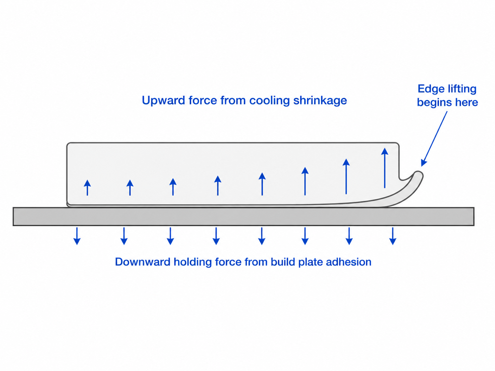

Why PLA prints develop edge lifting and minor warping
Why the problem happens
PLA cools and shrinks slightly as each layer is deposited. That shrinkage creates an upward pulling force on the lower edges of the part.
The build plate must hold the part down while this happens. When the shrinkage force becomes stronger than build plate adhesion, the edges begin to lift.

Why corners usually lift first
Corners often lift first because they have less surrounding material and more exposure to open-air cooling. Once a corner lifts, the nearby edge often follows.
Why large flat parts warp more easily
Large flat parts create more total shrinkage stress as PLA cools.
Long straight edges can also accumulate stress in one direction. This can make the lower perimeter more likely to pull away from the build plate.
For that reason, parts that look simple because they have a large flat base may actually be harder to keep fully attached during printing.
Why the first layers matter most
The first layers determine how well the rest of the part stays anchored to the build plate.
If first-layer contact is weak, later shrinkage forces become more visible. As the print grows taller, the lower edges may be pulled upward more easily.
For that reason, edge lifting and minor warping often begin as an early first-layer problem, even when the print continues for some time afterward.